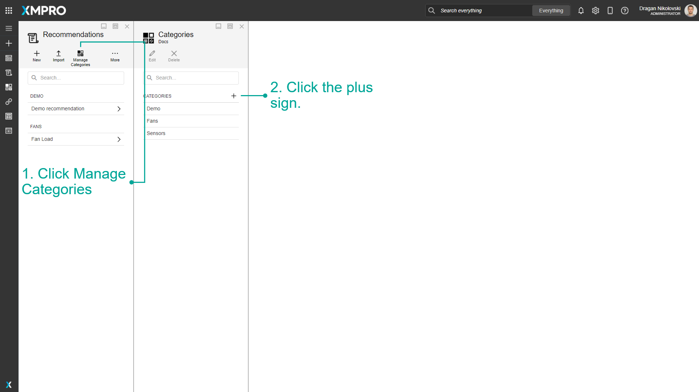
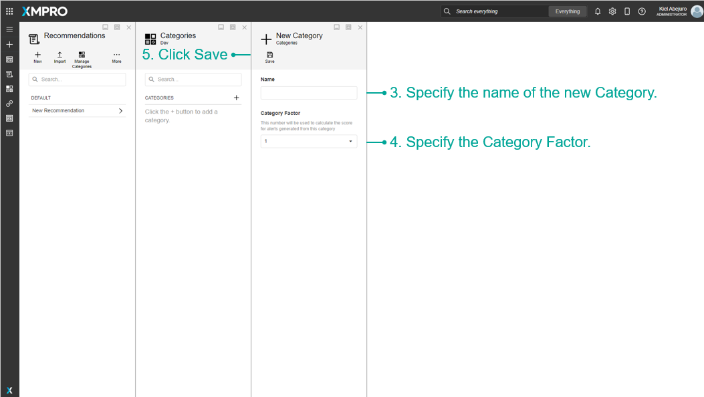
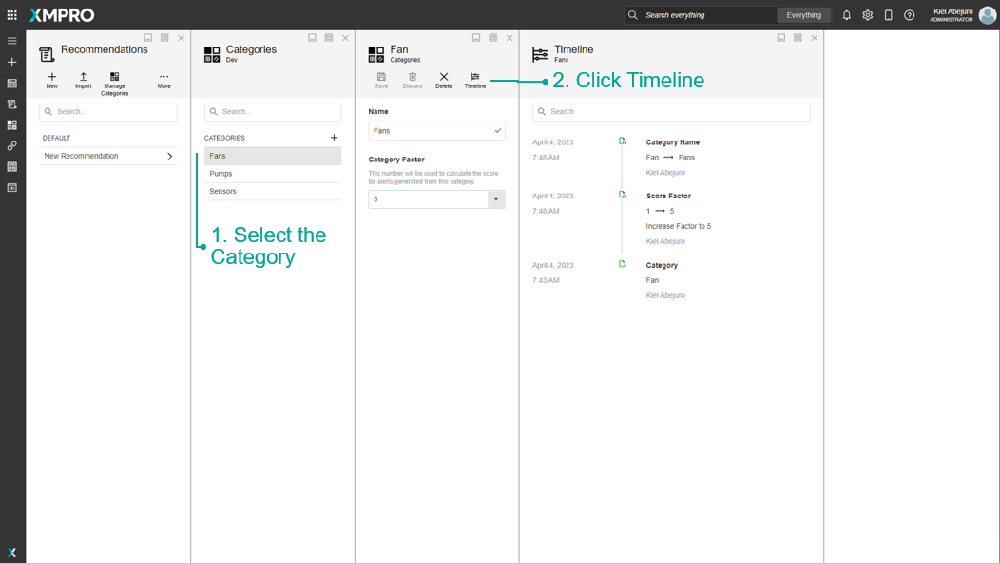
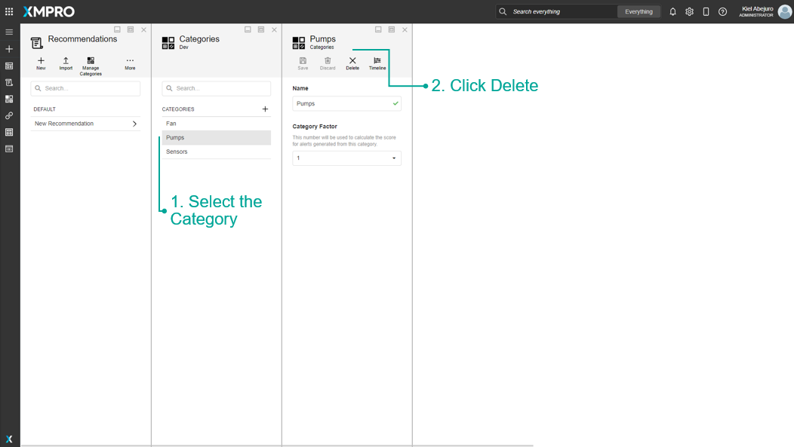
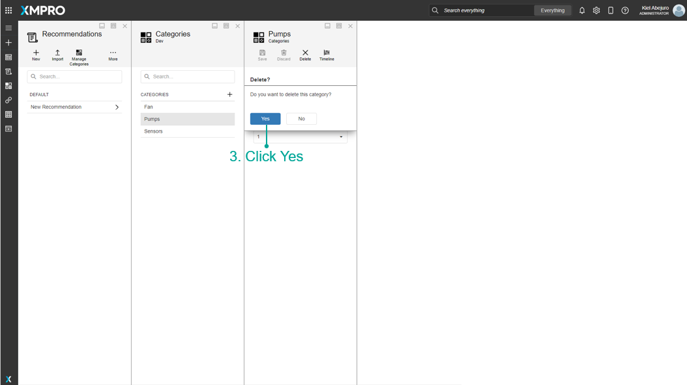

Manage Categories
Recommendations can be grouped into categories. This refers to the category under which the Recommendation is found in the Recommendations list
Create a Category
To create a new Category, follow the steps below after navigating to the Recommendation management page:
- Click Manage Categories.
- Click the plus sign.
- Specify the name of the new Category.
- Specify the Score Factor for the Category.
- Click Add.
Please see images below.


View Category Timeline
The Category Timeline shows the changes that occur when a category is being edited. Follow the steps below to view the timeline:
- Select the Category
- Click Timeline

Delete a Category
To delete an existing Category, follow the steps below:
- Select the Category.
- Click Delete.
- Click Yes.


Last modified: May 28, 2025